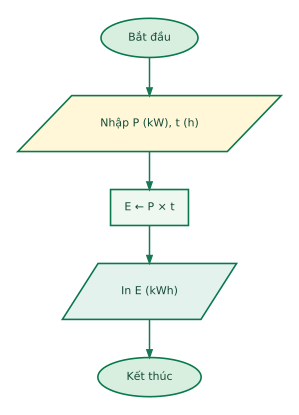

Khóa học / Mô-đun 1 / Bài 01
01 Mục tiêu và kiến thức tiên quyết
- Lập bảng dữ liệu đầu vào, đầu ra, giả thiết và tiêu chí kiểm thử của một bài toán kỹ thuật.
- Viết mã giả và chuyển thành chương trình Python đơn giản có chú thích rõ ràng.
- Chạy tệp .py, phân biệt kết quả hợp lệ và trường hợp phải từ chối dữ liệu.
Kiến thức tiên quyết: không yêu cầu biết Python trước; cần hiểu đại lượng kỹ thuật cơ bản.
02 Tình huống kỹ thuật
Cho một tải điện có công suất điện đầu vào không đổi 1,5 kW, vận hành 3 h. Cần xác định điện năng tiêu thụ bằng chương trình Python và chứng minh kết quả đúng đơn vị.
P = 1,5 kW; t = 3 h.
E (kWh), chương trình in kết quả 4,50 kWh.
03 Kiến thức và thuật ngữ cốt lõi
Bài toán trước cú pháp
Lập trình kỹ thuật bắt đầu từ việc hiểu đại lượng vật lý và quy luật tính toán. Python là phương tiện mô tả quy luật; việc chương trình chạy được không tự chứng minh mô hình đúng.
Cấu trúc thực thi
Trong Python, thụt lề biểu diễn khối lệnh. Chương trình .py được thực thi bởi trình thông dịch; chế độ tương tác thích hợp để thử biểu thức nhỏ, tệp .py phù hợp chương trình có thể lưu và chạy lại.
Lộ trình thiết kế
Dùng chuỗi: yêu cầu → I/O và đơn vị → giả thiết → mã giả → chương trình → kiểm thử → giải thích giới hạn. Từ bài đầu, sinh viên phải xác định trước kết quả kỳ vọng.
Chú thích
Dấu # mở đầu chú thích đến hết dòng; bộ ba dấu nháy thường tạo chuỗi nhiều dòng hoặc docstring khi đứng ở vị trí phù hợp, không phải cú pháp chú thích tổng quát.
04 Xây dựng và kiểm tra thuật toán
Trước khi xem chương trình, hãy đọc dữ liệu đầu vào, chọn điều kiện rẽ nhánh hoặc lặp, rồi dự đoán kết quả. Mã giả mô tả ý nghĩa thuật toán; không phải cú pháp Python thực thi được.

Mã giả
Lần vết các bước phân tích
Đây là lần vết các dòng mã giả, không phải trình thông dịch Python. Tự kiểm tra nhánh điều kiện bằng bảng ca kiểm thử ở mục 07.
05 Chương trình Python đã kiểm tra
Đọc mã, dự đoán kết quả và chạy tệp bai_01.py trong thư mục code. Các mã bài 9 trở lên có thể cần dữ liệu đi kèm từ thư mục data.
# Bài 1: tính điện năng với công suất đầu vào không đổi
cong_suat_kw = 1.5 # kW
thoi_gian_h = 3.0 # giờ
dien_nang_kwh = cong_suat_kw * thoi_gian_h
print(f"Điện năng: {dien_nang_kwh:.2f} kWh")
06 Thử nghiệm tham số có hướng dẫn
Thay đổi đầu vào để kiểm tra trực giác và đối chiếu với kết quả dự đoán. Trình khám phá này được lập trình lại bằng JavaScript theo bài toán minh họa, không phải kết quả chạy mã Python.
07 Thực hành và kiểm thử
Thực hiện các nhiệm vụ theo thứ tự từ có hướng dẫn đến độc lập; ghi lại kết quả thực tế của chương trình và so sánh với kết quả kỳ vọng.
- Viết bảng IPO cho chương trình tính điện năng của thiết bị hoạt động 2 h.
- Chuyển mã giả trên thành lưu đồ với khối bắt đầu, xử lý và đầu ra.
- Bổ sung bước kiểm tra P và t không âm sau khi học Bài 3.
Bảng kiểm thử bắt buộc
| Ca kiểm thử | Dữ liệu/điều kiện | Kết quả kỳ vọng |
|---|---|---|
| Điển hình | P = 1,5 kW; t = 3 h | E = 4,5 kWh |
| Biên thời gian | t = 0 h | E = 0 kWh |
| Biên công suất | P = 0 kW | E = 0 kWh |
| Dữ liệu sai | P âm | Yêu cầu phiên bản nâng cao từ chối dữ liệu |
08 Vận dụng vào chuyên ngành
Tính điện năng cấp cho máy nén giả định công suất không đổi; không suy diễn thành công suất lạnh.
Tính điện năng đầu vào của mô-tơ phụ trợ; không đồng nhất với cơ năng tại trục.
09 Trắc nghiệm và phản hồi
Mỗi câu có bốn phương án A/B/C/D. Chọn một phương án cho mỗi câu rồi nhấn Chấm và giải thích để xem vì sao từng phương án đúng hoặc chưa phù hợp.
Rubric tham khảo (100 điểm)
| Thành phần | Điểm |
|---|---|
| Đặc tả dữ liệu, đơn vị, giả thiết | 20 |
| Mã giả, trình tự thuật toán | 20 |
| Mã Python và tổ chức hàm/dữ liệu | 25 |
| Kiểm thử, đối chiếu, phân tích sai số | 25 |
| Giải thích và đề xuất cải tiến | 10 |
10 Nhật ký học tập và đánh dấu tiến độ
Tiến độ và ghi chép chỉ lưu trong trình duyệt hiện tại; không đồng bộ với hệ thống điểm của trường.
11 Tài liệu tham khảo và nguồn
| Nguồn | Vai trò và phạm vi sử dụng |
|---|---|
| MySlide.pptx | Slide tham khảo cho cấu trúc cú pháp, biến, kiểu dữ liệu và toán tử ở mức nhập môn. |
| Pythonlearn-01-Intro.pptx | C. Severance, Python for Everybody — Chương 1, tổng quan và luồng chương trình. |
| PythonCoban_UTEHY.pdf | N. V. Hậu và cộng sự, Python cơ bản — các bài nền tảng tương ứng. |
| Python for Science and Engineering.pdf | H.-P. Halvorsen — tính toán số, giải phương trình, đồ thị, mô phỏng và dữ liệu kỹ thuật. |
Học liệu mới được viết lại theo định hướng sư phạm. Không trích lại nguyên văn hoặc phân phối các slide/sách gốc trong gói website.